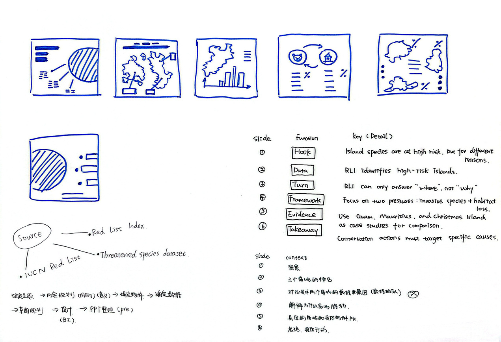
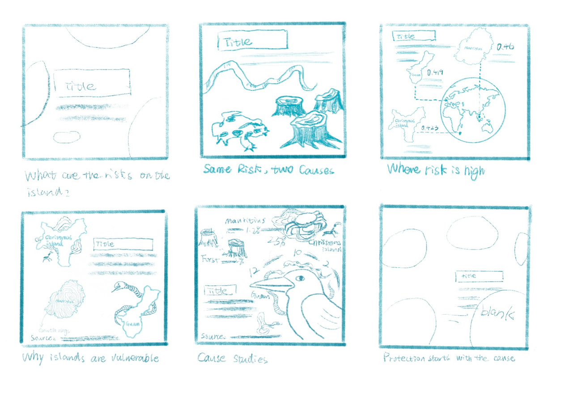
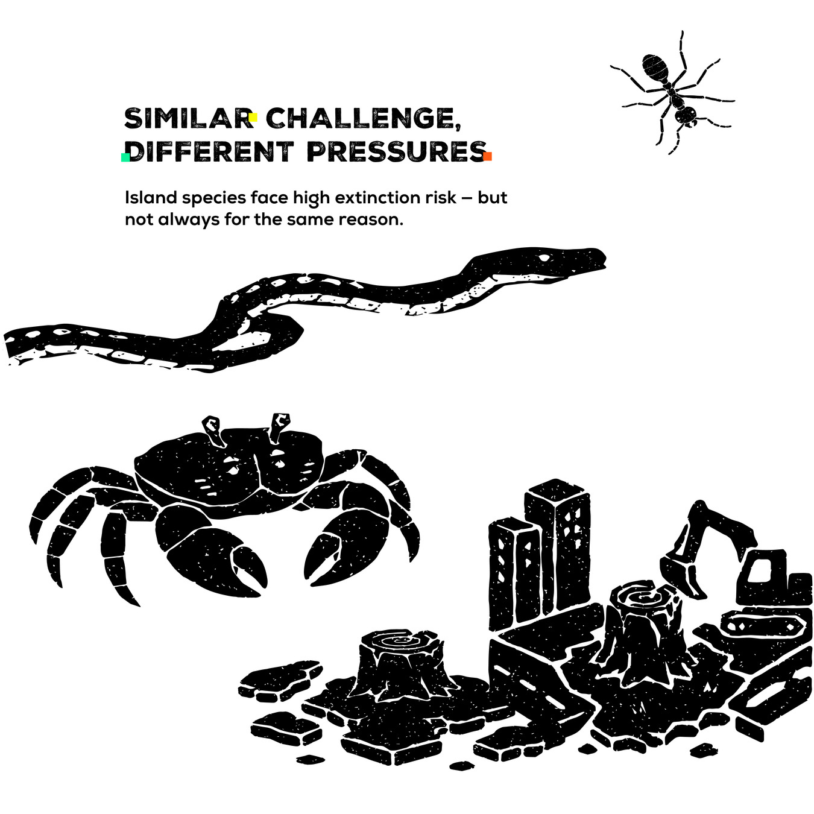
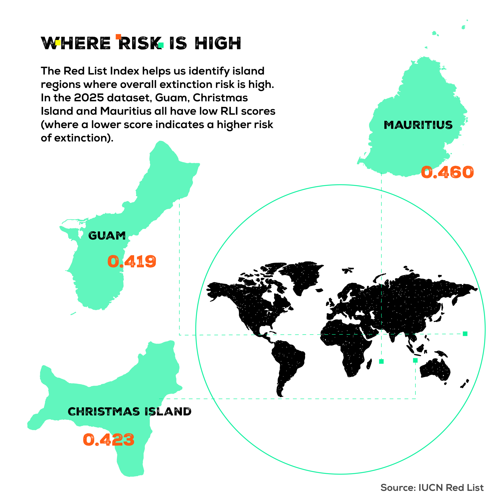
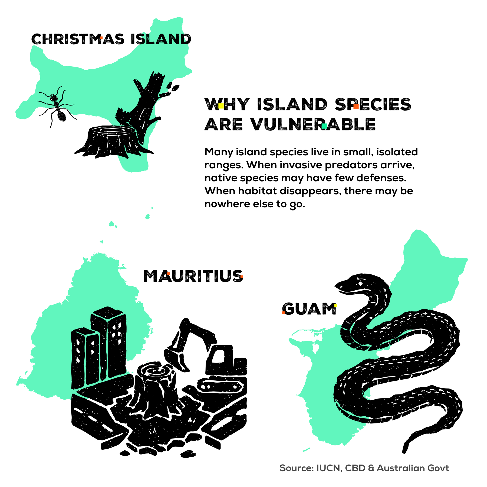
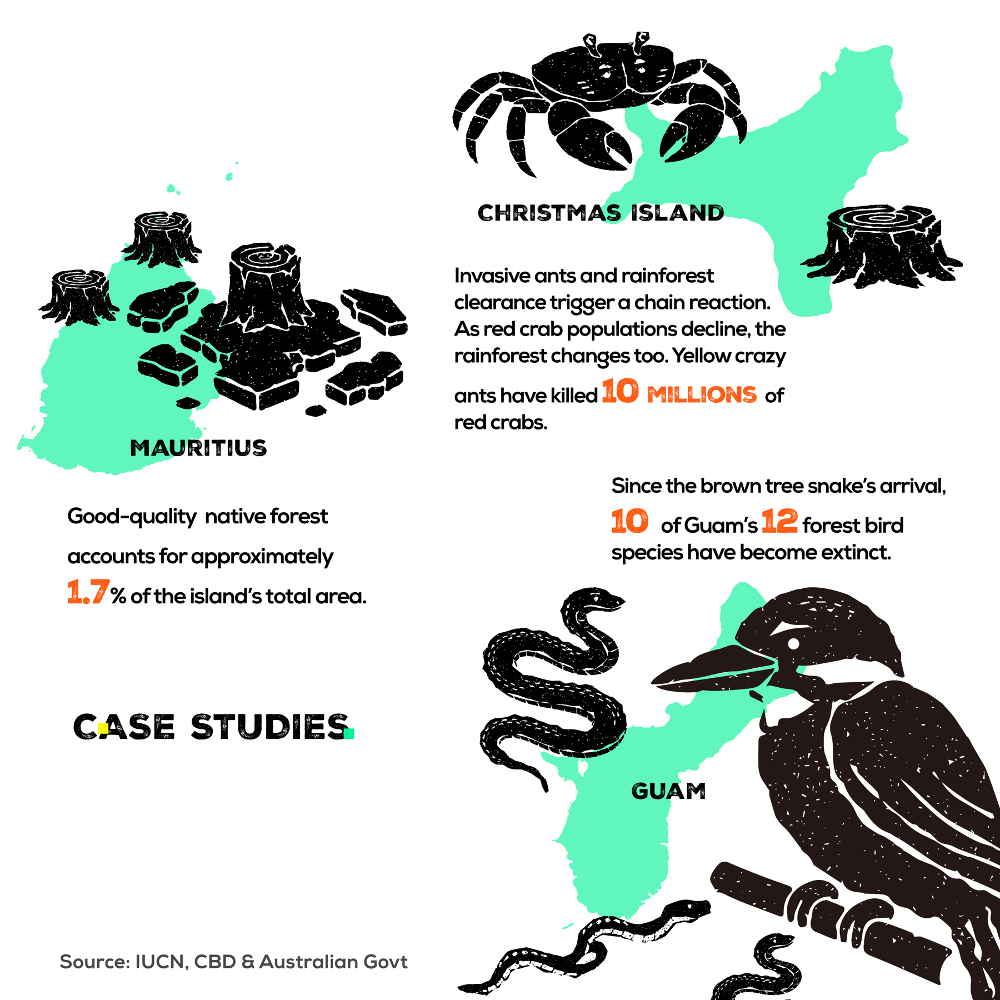
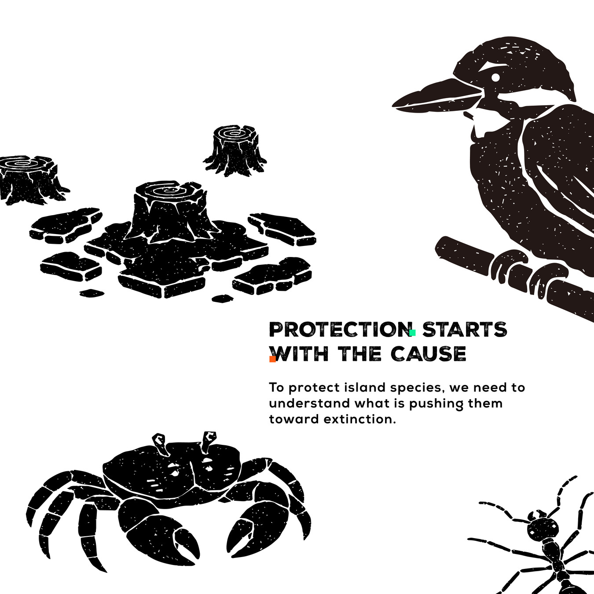

01 / THE COLLABORATION
行业命题下的研究与社媒内容设计 我的职责：数据研究、概念策划、社媒设计与汇报。团队：Ying Sun、Zehan Li、Kailin Zhou。
INDUSTRY PARTNER
Beyond Words. 机构官网 ↗ Beyond Words Studio 是以伦敦为基地、专注于数据可视化、信息设计与数据新闻的创意工作室，将复杂研究转化为面向国际受众的视觉故事。
视觉叙事 数据可视化 数据新闻
工作室官网展示的合作机构 World Health Organization World Bank Netflix Gates Foundation BBC
工作室曾公开分享与 UAL 数据可视化设计硕士课程围绕生物多样性开展的工作坊，涵盖研究、故事发展与社交媒体可视化。Islander 是我们团队对其 IUCN 红色名录命题的回应。
查看工作室发布的 UAL 合作分享 ↗ 在 UAL × Beyond Words Studio 的校企合作商业命题中，我负责数据研究、概念策划、社交媒体设计与汇报，以「相似风险、不同压力」建立团队项目的内容主线。
团队聚焦关岛、圣诞岛与毛里求斯，将研究问题组织为六幅 Instagram 内容：从视觉引入和风险定位，逐步展开成因、案例与保护意识。地图、物种及威胁图形帮助建立跨画面的内容关联。
MY CONTRIBUTION / ZEHAN LI 我的职责：研究、策划、社媒设计与汇报 我负责数据研究、概念策划、社交媒体设计及汇报：梳理资料与比较问题，建立「相似风险、不同压力」的内容主线，并将研究组织为系列画面和设计说明。
项目背景 校企合作 / 商业命题
合作工作室 Beyond Words Studio
研究命题 The IUCN Red List
成果形式 Instagram 视觉叙事系列
项目团队 Ying Sun · Zehan Li · Kailin Zhou
课程背景 MA Design for Data Visualisation / UAL 02 / FROM RESEARCH TO FEED
从研究问题，到社交媒体阅读路径 01 研究不同压力 我参与数据研究，将红色名录指数与各岛屿案例资料联系起来，为有重点的比较建立基础。
RESEARCH 02 建立核心概念 我负责概念策划，以「相似风险、不同压力」组织故事，将宽泛的保护议题转化为具体叙事问题。
CONCEPT 03 面向社交媒体阅读 我负责社交媒体设计，通过方形画面的序列、清晰的信息层级和简洁文字组织阅读；团队的木刻风格物种与威胁图形形成统一的视觉语言。
DESIGN 04 汇报设计逻辑 我承担项目汇报，呈现研究、概念与设计决策，说明系列内容如何连接证据与受众理解。
PRESENT 团队过程记录：早期叙事草图与系列编排。

↗ 01 / TEAM PROCESS 团队过程：研究与叙事草图 
↗ 02 / TEAM PROCESS 团队过程：社交媒体分镜 03 / THE SOCIAL STORY
六幅系列设计与社媒应用 6 幅系列 + 1 个应用 系列设计原稿与 Instagram 应用效果。点击图片，可放大查看。
↗ 01 / SOCIAL / APPLICATION Instagram 系列应用效果 ↗ 02 / STORY / INTRO 从岛屿风险打开故事 
↗ 03 / STORY / QUESTION 相似挑战，不同压力 
↗ 04 / DATA / GEOGRAPHY 以地图定位风险比较 
↗ 05 / STORY / EXPLAIN 解释岛屿物种的脆弱性 
↗ 06 / STORY / CASES 连接三座岛屿的案例 
↗ 07 / STORY / ACTION 从认识原因走向保护意识